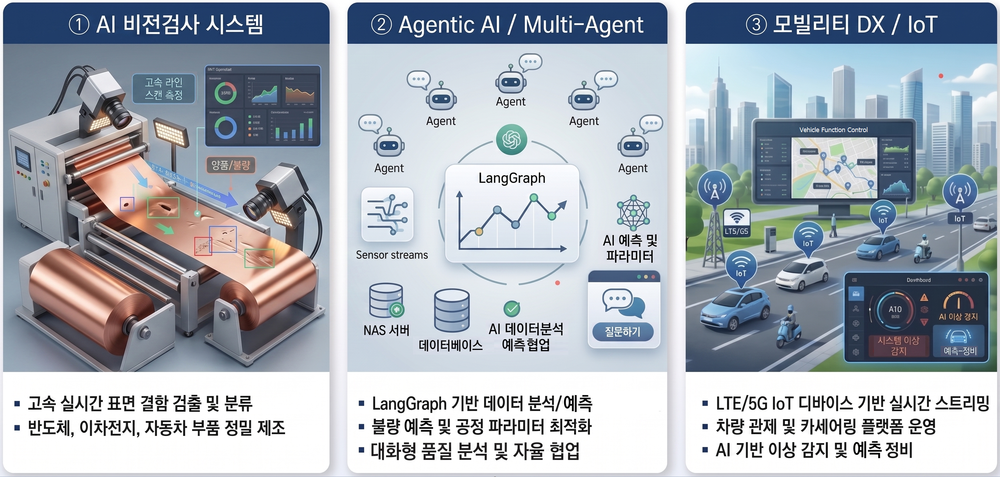
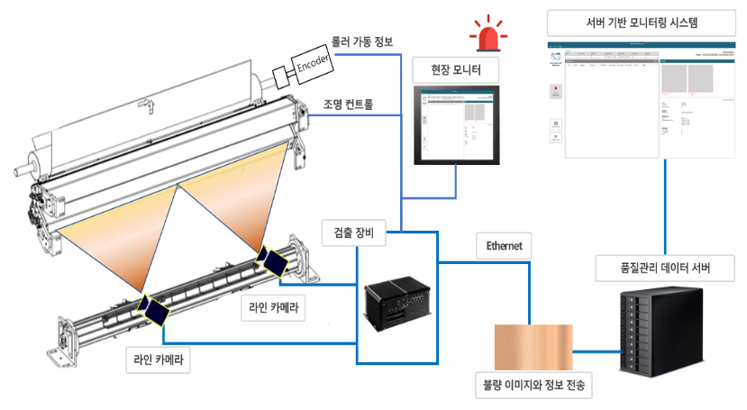
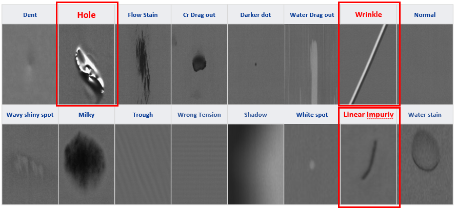
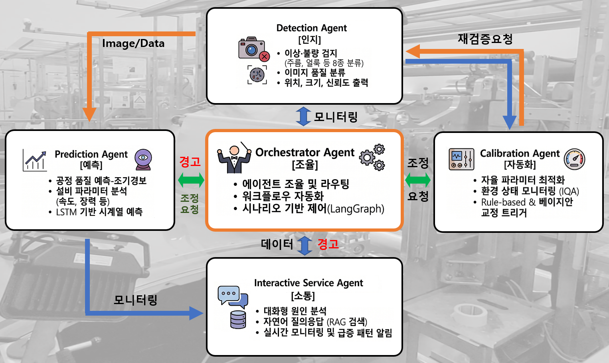
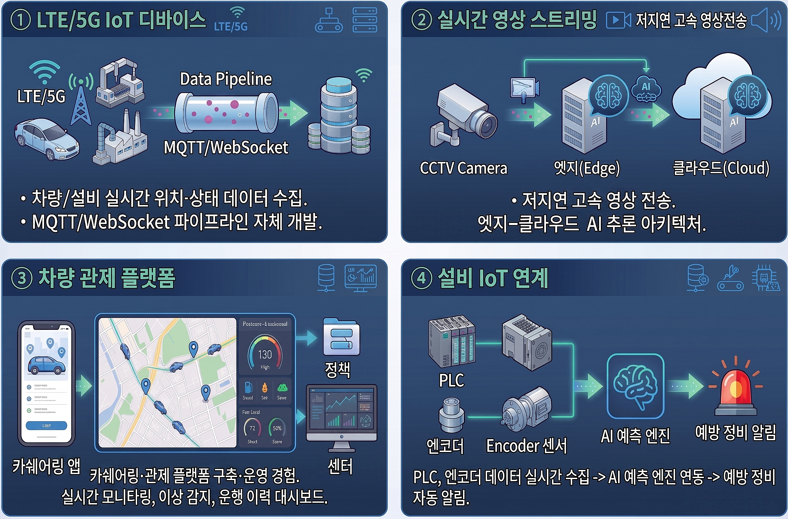
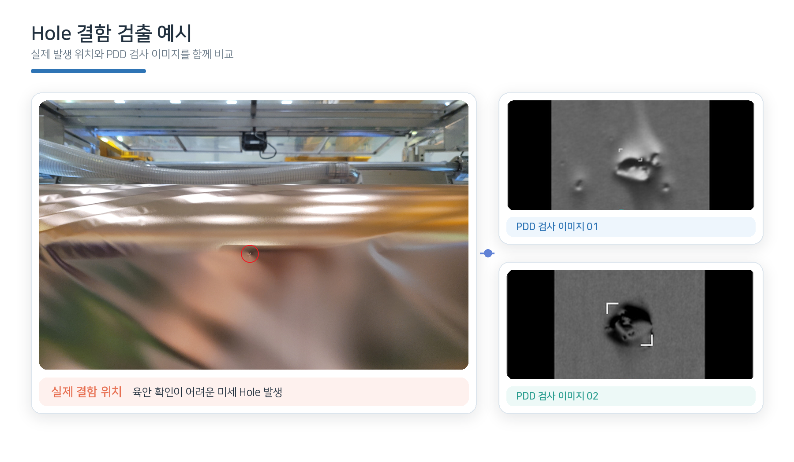
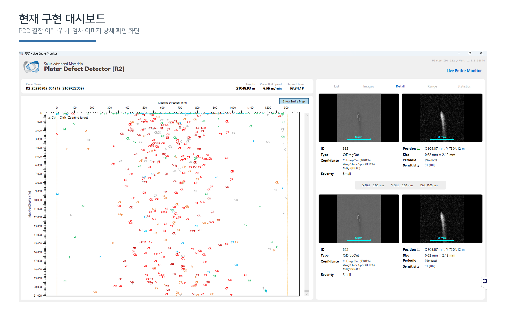

AI 비전검사 시스템
고속 라인스캔 기반 표면 결함 실시간 검출·분류·이력화. 광학계부터 AI·PLC까지 End-to-End 구축.
VIEW MORE →BUSINESS
AI 비전검사, Agentic AI, IoT·스트리밍 기술을 하나의 실행 가능한 시스템으로 설계합니다.
고속 라인스캔 기반 표면 결함 실시간 검출·분류·이력화. 광학계부터 AI·PLC까지 End-to-End 구축.
VIEW MORE →LangGraph 기반 에이전트가 검출, 보정, 예측, 분석을 자율 협업하여 제조 공정 의사결정을 지원합니다.
VIEW MORE →LTE/5G IoT, 실시간 영상 스트리밍, 차량 관제와 설비 데이터를 연결해 예측 가능한 운영 환경을 구축합니다.
VIEW MORE →ABOUT CHINS AI LABS
CHINS AI Labs는 제조 분야의 AI 에이전트 전문기업입니다. 비전 기반 표면 결함 검출부터 Multi-Agent 공정 지능화, IoT·스트리밍까지 직접 설계하고 현장에 적용합니다.

VISION AI
동박 소재 특성에 맞춘 광학계와 AI 모델, Edge GPU, PLC 연동을 하나의 시스템으로 제공합니다.

DEFECT CLASSIFICATION
주름, 홀·핀홀, 이물, 스크래치, 눌림·압흔, 산화·변색, 얼룩, Cr Drag-Out 등 주요 결함 유형을 자동 분류합니다.

AGENTIC AI
각 에이전트가 역할을 분담하고 Orchestrator가 전체 워크플로우를 통합 조율합니다.

비전검사 결과 수신 · 불량 유형 자율 식별
조명·카메라 파라미터 자동 최적화·롤백
시계열 기반 불량 급증 사전 예측
LLM + RAG 기반 자연어 원인 분석·SOP 검색
LangGraph 상태머신 기반 전체 에이전트 조율
On-Premise LLM(Llama) 기반으로 보안과 데이터 주권을 확보하고, 클라우드 의존 비용을 줄입니다.
MOBILITY DX / IoT
LTE/5G 디바이스부터 엣지-클라우드 AI, 관제 대시보드, 예방정비 알림까지 확장 가능한 데이터 파이프라인.

차량·설비의 위치·상태 데이터를 MQTT/WebSocket으로 실시간 수집합니다.
저지연 고속 영상 전송과 Edge–Cloud 하이브리드 AI 추론 구조를 제공합니다.
실시간 모니터링, 이상 감지, 운행 이력 기반의 관제·카쉐어링 플랫폼 경험을 보유합니다.
PLC·엔코더 데이터를 AI 예측 엔진과 연결해 예방 정비 알림으로 확장합니다.
REFERENCE
핵심 기술은 양산 현장과 실제 운영 환경에서 검증되었습니다.
동박 제조 공정 라인스캔 기반 결함 검출 시스템 원격·현지 유지보수 수행.
실시간 표면 결함 검출 시스템 설계·개발·설치·인도. 해외 공장(헝가리) 현장 납품.
자동차 딜러 그룹사 DMS AI 전환 및 업무 자동화 파이프라인 개발·납품.
LTE/5G IoT 디바이스, 실시간 스트리밍, 관제·카쉐어링 플랫폼 자체 개발·운영.


CONTACT
검사 자동화, 공정 지능화, IoT·모빌리티 DX 프로젝트를 함께 검토해보세요.